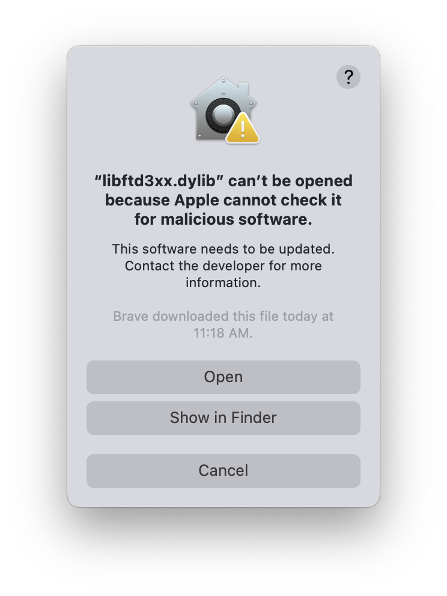
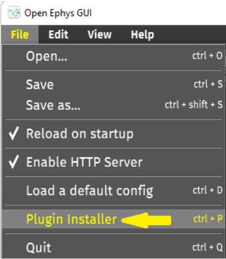
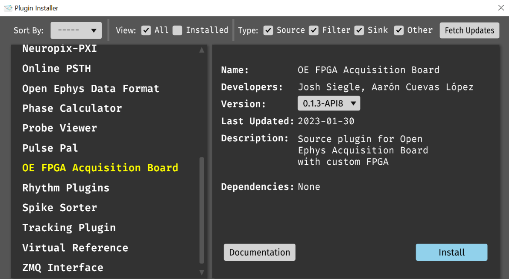
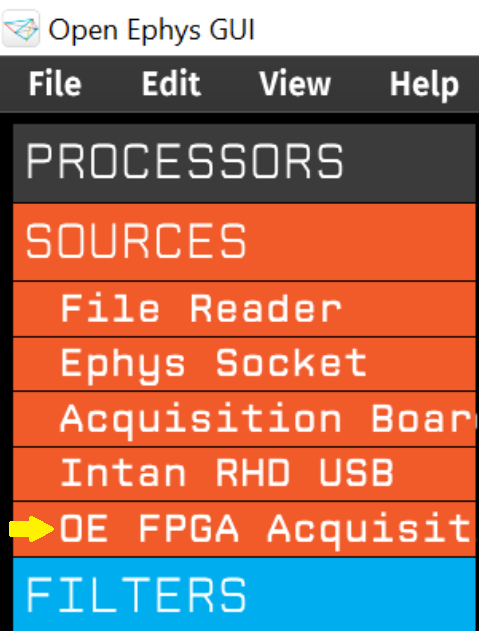
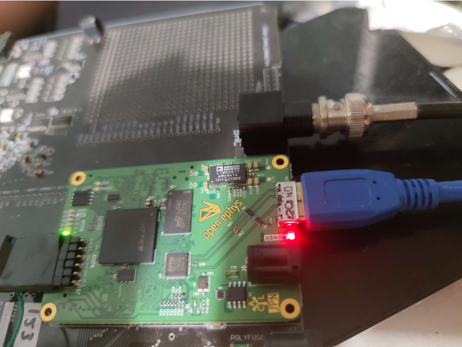
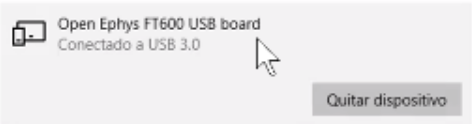
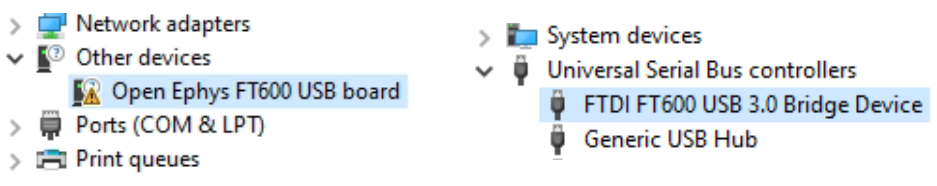
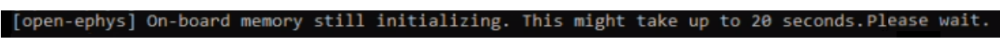

New Open Ephys FPGA module#
Last updated: 18th Dec 2023
Devices shipped from Dec 2022 onwards use a brand-new FPGA module designed by Open Ephys.
These boards need a different driver and Open Ephys GUI plugin to work.
Before attempting to use this board, please follow the instructions below.
Important
The instructions will guide you since you will need to install and use:
A different driver, FTD3XXDriver
A different plugin, OE FPGA Acquisition Board for GUI v0.6.x
The latest gateware if not already on the board
Instructions#
1. Install the driver#
The new FPGA uses different drivers that need to be installed before plugging the device to your computer.
On Windows#
Download the Windows driver.
Unzip the folder
Run
FTD3XXDriver_WHQLCertified_v1.3.0.4_Installer.exe
Warning
There is a known issue with Windows driver version 1.3.0.8. Make sure you use version 1.3.0.4 linked above. If you encounter “Error reading ONI frame: Unknown error code”, follow the steps in this GitHub issue to resolve it.
On MacOS#
Download the MacOS driver.
Copy the file
libftd3xx.dylibto/usr/local/lib(you can usesudo cp libftd3xx.dylib /usr/local/lib)
Some security features on mac might prevent the driver from loading.
{kind=link}

The steps to solve this are:
Go to system settings
Go to the Security and Privacy section
Unlock the page by clicking on the lower-left padlock icon. It will ask for your password
Near the bottom of the page, the library error will appear, click on allow
Run the updater again, if a window appears, it will have an
openoption now
2. Make sure your Open Ephys GUI version is up to date#
The new plugin works in version v0.6.x of the GUI and above.
Follow the steps to install the latest version of the Open Ephys GUI.
3. Install the plugin#
You now need to install the new plugin in the Open Ephys GUI v0.6.x or above.
Within the Open Ephys GUI, select
Plugin Installerfrom theFilemenu.
{kind=link}

Find the
OE FPGA Acquisition Boardplugin and clickInstall. Always use the latest version of the plugin
{kind=link}

4. Make sure you have the latest gateware#
We have released several improvements since the first batch of boards went out in Dec 2022, so depending on when you got your board, you might not have the latest gateware. We always ship the boards with the latest version of the gateware and we don’t make changes to the gateware often, so you will typically not need to update it.
Follow the instructions on the Gateware updates page to check your gateware version and update it if necessary.
5. Test and use your board!#
You can now use this plugin to acquire data from your acquisition board. Usage instructions for the board can be found in this User Manual and for the plugin, in the Rhythm Plugins page of the OE GUI documentation.
Avoid confusing the new OE FPGA Acquisition Board plugin with the one called Acquisition Board, which was used for previous versions of the acquisition board that did not have the Open Ephys FPGA. We are working on consolidating everything into the same plugin but for the moment, these are two separate plugins. Your new board will not work with the old plugin and vice versa.
{kind=link}

As with any new device, test your acquisition board to make sure it is working as expected by performing checks on a short recording before using it for research. We test them before they get to you but might not have covered all the use cases and your particular hardware.
If you need help or are experiencing issues#
Please reach out to support@oeps.tech with these details:
tell us you have an acquisition board with the new FPGA module
copy & paste the complete contents of the console log (from the console window that opens at the same time as the GUI)
include a screenshot or photo of the issue
Under development#
We will continue to work on getting the full integration of the board with the new FPGA module that the previous boards had. We are working on a unified OE GUI plugin for all acquisition boards regardless of the FPGA module they have.
Important
Impedance measurements currently only work at 30kS/s sample rate. We are working on implementing impedance measurements at all available sample rates.
We have completed:
Making the new OE FPGA Acquisition board plugin cross-platform (Windows, MacOS and Linux).
Making a new Bonsai node for this new OE FPGA Acquisition board.
Differences with previous boards#
This board has a single power supply input located on the FPGA module itself. Always use the 5V power supply provided. Since this new FPGA module was developed by us, it has the voltage protection circuitry we require for use with the acquisition board.
The power light inside the board is now red. The LED that indicates that the FPGA module is powered used to be green on the FPGA module we used previously, but on our new one it is red.
{kind=link}

The green LEDs on the left indicate different statuses so they can be used to troubleshoot.
The device name is now Open Ephys FT600 USB board.
The FPGA module is no longer a development board created by Opal Kelly. Instead, we have designed it at Open Ephys based on a Lattice ECP5 FPGA. It uses an FTDI FT600 USB chip, which explains the new name.
You should find it listed in Settings > Devices under Bluetooth & other devices with the name Open Ephys FT600 USB board.
{kind=link}

In the Device Manager, it is sometimes listed under Other devices as Open Ephys FT600 USB board and other times only the USB controller is shown, which is listed as FTDI FT600 USB 3.0 Bridge Device.
If you see a warning icon, you have to install the driver.
{kind=link}

It uses a different OE GUI plugin and Bonsai package.
Until software integration is complete, the acquisition board with the new FPGA module uses a different plugin in the OE GUI and a different package in Bonsai than the previous boards.
The OE GUI plugin is:
OE FPGA Acquisition BoardThe Bonsai package is:
Bonsai.OpenEphys
Plugin initialization takes slightly longer.
It takes a little more time than previously to initialize the plugin (every time you add the OE FPGA Acquisition Board plugin to the signal chain). This is something we are aware of and are working on improving. It also happens at runtime when using the new Bonsai node.
Additionally, this new FPGA module performs a self-initialization on power up for approximately 20 seconds after it is first connected to the power supply. If you try to use the OE FPGA Acquisition Board plugin during this time, you will see the following message in the console:
{kind=link}

And the plugin will wait until the self-initialization is completed to continue loading. The GUI might appear non responsive during this time. This will not appear if the node is created after the board has performed this self-initialization.
The bitfile is stored permanently on the board. Make sure you update to the latest gateware version.
In this new FPGA module, the bitfile is not uploaded by the OE GUI each time the board is recognized, but resides permanently on the board. This makes it easier to use it across different software like Bonsai as it avoids bitfile path issues.
However, this means that if there are any updates to the gateware you have to upload the bitfile manually. Gatware updates are not common after an initial period during which any bugs are resolved. For reference, the bitfile for the old board has changed less than 10 times in 7 years. You can update the gateware on your FPGA module by following the instructions on the Gateware updates page.
Contribute#
We count on user feedback to improve our devices, as we test them before they get to you but might not have covered all the use cases and your particular hardware. Always test new devices by performing checks on a short recording before using them for research.
If you find any problems, please let us know and we will address them as fast as we can. We would appreciate it if you can post a GitHub Issue to the plugin repository.
While acquisition board usage is the same, we will be slowly updating the documentation to reflect these changes. You are welcome to contribute to our documentation hosted on GitHub.
Why and how did we make this happen?#
Our acquisition board relies on an FPGA (Field-Programmable Gate Array) to control data acquisition and timestamp the incoming data (see the details on the How it works page). The Opal Kelly FPGA module we used in previous acquisition boards was end-of-lifed all of a sudden at the end of 2021 and it immediately ran out of stock.
The Open Ephys team, led by Aarón Cuevas López, developed a completely new module with the scarce components available despite the ongoing silicon shortage. This module uses the same footprint as the previous one, so it can be replaced directly on the existing acquisition boards, although it uses a different FPGA, a Lattice EPC5, and its design is open source. Additionally, communication with the computer follows our new ONI standard for common interfaces in neuro tools (the same standard that powers our next-gen system, ONIX).
In under a year, this new design went into production and we started to ship to users that had been waiting eagerly for new boards and repaired boards. Software integration quickly followed, to provide users with the same functionality they know and have come to rely on for their research over the past decade.
External Licenses#
The Open Ephys FPGA board makes use of LiteDRAM as a memory controller.
Unless otherwise noted, LiteDRAM is Copyright 2012-2022 / EnjoyDigital Initial development is based on MiSoC’s LASMICON / Copyright 2007-2016 / M-Labs
Redistribution and use in source and binary forms, with or without modification, are permitted provided that the following conditions are met:
1. Redistributions of source code must retain the above copyright notice, this list of conditions and the following disclaimer.
2. Redistributions in binary form must reproduce the above copyright notice, this list of conditions and the following disclaimer in the documentation and/or other materials provided with the distribution.
THIS SOFTWARE IS PROVIDED BY THE COPYRIGHT HOLDERS AND CONTRIBUTORS “AS IS” AND ANY EXPRESS OR IMPLIED WARRANTIES, INCLUDING, BUT NOT LIMITED TO, THE IMPLIED WARRANTIES OF MERCHANTABILITY AND FITNESS FOR A PARTICULAR PURPOSE ARE DISCLAIMED. IN NO EVENT SHALL THE COPYRIGHT OWNER OR CONTRIBUTORS BE LIABLE FOR ANY DIRECT, INDIRECT, INCIDENTAL, SPECIAL, EXEMPLARY, OR CONSEQUENTIAL DAMAGES (INCLUDING, BUT NOT LIMITED TO, PROCUREMENT OF SUBSTITUTE GOODS OR SERVICES; LOSS OF USE, DATA, OR PROFITS; OR BUSINESS INTERRUPTION) HOWEVER CAUSED AND ON ANY THEORY OF LIABILITY, WHETHER IN CONTRACT, STRICT LIABILITY, OR TORT (INCLUDING NEGLIGENCE OR OTHERWISE) ARISING IN ANY WAY OUT OF THE USE OF THIS SOFTWARE, EVEN IF ADVISED OF THE POSSIBILITY OF SUCH DAMAGE. Other authors retain ownership of their contributions. If a submission can reasonably be considered independently copyrightable, it’s yours and we encourage you to claim it with appropriate copyright notices. This submission then falls under the “otherwise noted” category. All submissions are strongly encouraged to use the two-clause BSD license reproduced above.